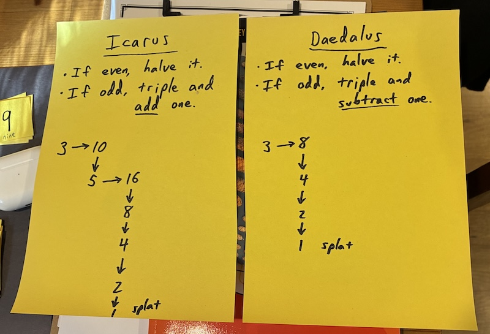

3rd-grade math club
Thursday October 8, 2026
We hosted a little hour-long after-school “math club” on Monday, three eight-year-olds around the kitchen table.
After homework was done, each kid worked a sheet of five third-grade sample problems from the Noetic Learning Math Contest, which I had heard about from a friend. (I also had fourth and fifth-grade papers for them, which they were interested in tackling as well, but we didn't spend much time on them in person on Monday.)
Every kid missed at least one problem one way or another, and it was interesting to hear them share their solution methods and correct themselves based on what they heard from their friends (and occasional adult re-framing).
Then they did a problem as a group, which was the grade four problem from Gordon Hamilton's Unsolved K-12, which I happened to learn of because I have a copy of his book Socks Are Like Pants, Cats Are Like Dogs. It's a fun presentation of the Collatz Conjecture.

I feel a little corny doing a bunch of patter for a problem, but the kids seemed to really enjoy it, especially the “splat.”
It also makes it a lot more engaging that one problem is beatable. Our group quickly found a family of solutions and then was uninterested in finding more for that case. But they spent considerable time looking for counter-examples to the Collatz Conjecture, which was a fun way to practice arithmetic as well.
When I eventually explained that nobody had yet found a counter-example, their reaction was not at all to give up; one kiddo instead suggested trying 100. It seemed that, as intended, having them tackle an open problem was interesting and motivating.